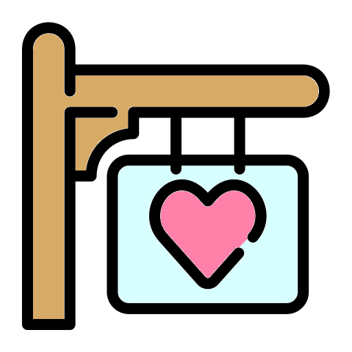
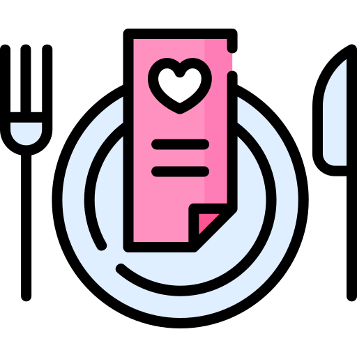
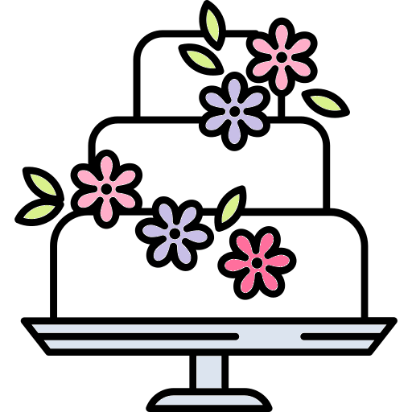
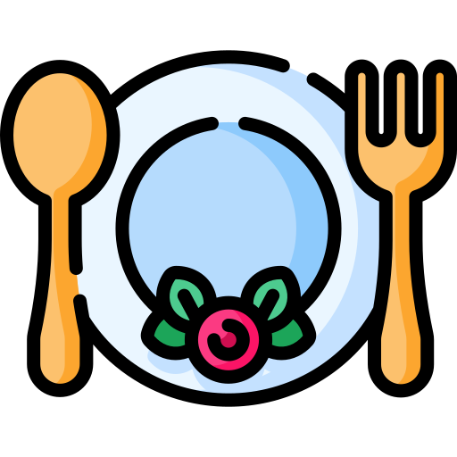
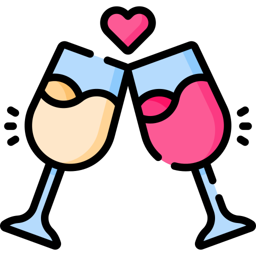

Wir Heiraten!
Und wenn ihr einen Link hierher von uns (oder in unserem Namen) erhalten habt,
seid ihr eingeladen!
Am 1. Juni 2024 werden wir, Manuel Dornacher und Verena Lanzinger, in Graz heiraten. Die Trauung wird im engsten Familienkreis vormittags stattfinden, und von mittags an werden wir eine kleine Feier gemeinsam mit Verwandtschaft und guten Freunden veranstalten, das werden um die 30 Personen sein. Auch eure Partner und Partnerinnen sind herzlich eingeladen.
Hier könnt ihr alle Infos dazu finden, und uns dann Bescheid geben, ob ihr gerne dabei sein würdet!
Dresscode
Die Idee ist vermutlich am besten mit "Smart Casual" zusammengefasst. Das ist ein Richtwert, aber ihr sollt bitte alle tragen, worin ihr euch wohl fühlt! Ob das Jeans mit einem feschen Hemd oder ein lässiges Kleid mit einem Lieblingsaccessoire ist, oder auch der gewohnte Anzug, wir freuen uns darauf, euch alle zu sehen.
Ein wichtiger Punkt wird wohl sein, dass die Feierlichkeiten von Mittags bis Abends auf einer Dachterrasse stattfinden werden, und wir deshalb dem Wetter am 1. Juni ausgesetzt sind. Bitte schaut, dass euer Outfit zu den Temperaturen passt, damit es für euch ein angenehmer Tag wird!
Mitbringsel
Da wir schon seit bald einem Jahrzehnt unseren gemeinsamen Haushalt einrichten, könnt ihr beruhigt sein, dass wir aktuell alles haben, was wir brauchen. Eure Anwesenheit ist, was uns freuen wird, und niemand muss sich verpflichtet fühlen mit Geschenken anzukommen!
Ablauf
Hier ist eine Übersicht zum aktuellen Ablaufplan. Infos zu Anreisemöglichkeiten findet ihr weiter unten.
| 10:30 |

|
Standesamtliche Trauung | Rathaus Graz Hauptplatz 1, 8010 Graz | Nur für Eltern, Geschwister und Trauzeugen (und Partner)! |
| 12:00 |  | Empfang im Gasthaus | Gasthaus Lend-Platzl Lendplatz 11, 8020 Graz | Hier treffen sich alle! Das Gasthausperonal wird euch zu unserem Bereich bringen. |
| 13:00 |  | Mittagessen | Auswahl zwischen Backhendlplatte und Vegetarischer & Veganer Platte sowie Beilagen | |
| 15:00 |  | Torte! | Natürlich gluten- und laktosefrei | |
| 19:00 |  | Abendessen | Fingerfood, und wer warm oder mehr möchte á la carte | |
| bis 22:00 |  | Trunk & Spiele | Den ganzen Tag über! |
Location Infos
Zur Trauung
Nur für Eltern, Geschwister und Trauzeugen (und Partner)!
Achtung: Die Trauung findet nicht im Standesamt sondern im Rathaus statt!
Wir treffen uns vor dem Gebäude bzw. unter den Lauben beim Eingang. Ihr könnt jede
Straßenbahnlinie nehmen und bei "Hauptplatz" aussteigen, dann steht ihr effektiv schon davor.
Nach der kurzen Trauung haben alle genügend Zeit, um zum Gasthaus zu gelangen. Je nach Wetter und Schuhwerk ist das zu Fuß möglich, aber auch mit den Öffis gut machbar.
Zur Feier
Hier treffen sich alle! Das Gasthausperonal wird euch zu unserem Exklusivbereich bringen.
Das ist deren schöne Dachterrasse, oder im Fall von schlechtem Wetter einer ihrer
Veranstaltungssäle.
Der Plan besteht hauptsächlich aus viel Essen, guter Gesellschaft und Brettspielen, die wir mitbringen
werden!
Zum Mittagessen wird es die Auswahl zwischen Backhendlplatten und Vegetarischen & Veganen
Platten sowie Beilagen geben. Wie weiter unten erwähnt, wäre es super, wenn ihr uns schon
eine Tendenz geben könntet, welche dieser euch mehr zusagt. Das dient dazu, die Vorbereitungszeit
zu reduzieren, aber ihr könnt euch auch vor Ort noch umentscheiden.
Damit niemand wegen Hunger früher gehen muss, haben wir neben dem Kuchen
auch noch Fingerfood für Abends geplant. Hier wird es auch eine Auswahl geben.
Es ist jederzeit auch möglich einfach etwas aus der Speisekarte zu bestellen!
Getränke werden natürlich auch durchgehend verfügbar sein.
Um 22 Uhr müssen wir die Dachterrasse verlassen, also sind bis dahin hoffentlich alle satt!
Hier findet ihr noch Infos zum Gasthaus Lend-Platzl selbst.
Anreise & Übernachtung
Die Location sowie das Rathaus sind gut mit den öffentlichen Verkehrsmitteln erreichbar.
Die App "BusBahnBim"
oder Google Maps funktionieren in Graz gut um sich zurechtzufinden.
Für Autos gibt es direkt beim Gasthaus und beim Rathaus keine Parkmöglichkeiten.
Die jeweils nächsten Tiefgaragen sind am Lendplatz und beim
Kastner & Öhler, hier
findet ihr dazu mehr Infos.
Das Gasthaus, in dem die Feier stattfindet, bietet Hotelzimmer an. Im nahen Umkreis gibt es auch weitere Auswahl, mit vielen Hotels in Gehweite. Die Location ist mit den Öffis nicht allzuweit vom Hauptbahnhof entfernt.
Kontakte & Antworten
Wir bitten um Rückmeldung, ob ihr und eure Plus-Ones gerne kommen würdet!
Auch wäre es hilfreich für das Gasthaus, wenn ihr uns schon jetzt eine tendenzielle Essensvorliebe -
sprich Fleisch, vegetarisch oder vegan, oder auch sonstige Hinweise - bekannt geben könntet, damit
das viele Essen besser vorbereitet werden kann. Es ist aber kein Problem wenn ihr noch unentschlossen seid oder euch später umentscheidet!
Am einfachsten könnt ihr den "Ich bin dabei!" Button klicken und Verena eine E-Mail schreiben.
Ihr könnt euch auch telefonisch, via Messengers oder E-Mail bei uns sowie unseren Trauzeugen melden.
Die Handynummern werden wir nicht im Internet hinterlegen, aber hier sind die E-Mail Adressen:
- Manuel Dornacher: E-Mail
- Alex Dornacher (Manuels Trauzeuge): E-Mail
- Verena Lanzinger: E-Mail
- Mathias Cammerlander (Verenas Trauzeuge): E-Mail
Wir freuen uns auf euer Kommen!